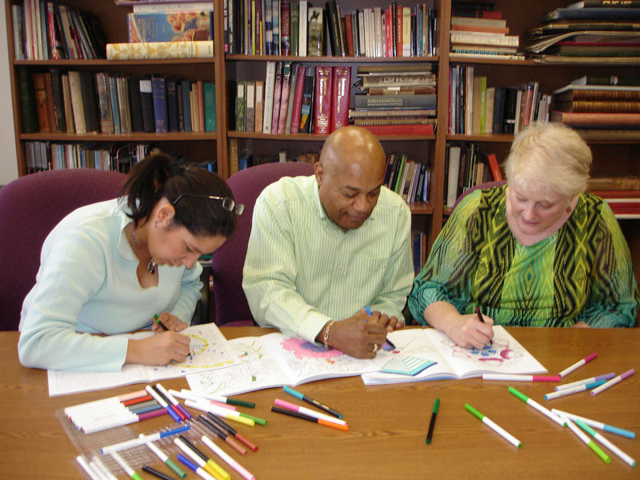

"Who We Are" - Understanding Our and Where We're Going.
You know the type of person who is into any and everything? They usually know one fact or another about the most random subjects. However, when it comes to mastering a field they never dip more than a toe below the water's surface. Next thing you know its 27 years later and I'm having a quater-life crisis about what is the next step in life? If you couldn't tell by now I'm talking about me. Hello, my name is Jamyria and I don't know how I got here. Yet, as confusing as it is it all makes so much sense.

I specifically remember at 14 years old I wrote my first blog post. I had decided for some reason that I was going to be a blogger. I wrote a a measly three-paragraph about a topic very similar to this one today. Obviously I did not become the youngest publishing blogger of 2009. I kept getting in my own way because I couldn't decide what I specifically wanted the blog to be about. I was frustrated with not knowing the immediate next step and wanted someone else to give me the answer. I would't just let the journey flow and trust that I could show up for myself. There are many people in our lives who will help guide us from one point to another, but we as individuals make the decision when to follow.
We start out as these small, clumsy beings eager to explore the world. In that eagerness there is a foundation built out of curiousity. That drive moves us closer to what we have already known from the beginning about ourselves. Intuitively we gravitate towards the object of our interests with little to no direction. Unfortunately for a lot of us that gentle nudge of our inner voices which used to ring so clearly grew quiet. That voice became overshadowed by others' expectations, emotions, and experiences. This raises the question what is the point of having your own voice if you can't recognize it?
When you solely follow the voices of others I think we lose appreciation for the timbre of our own. We live in a world that is at the height of technology and information. Unless you live in a secluded forest in the middle of nowhere, we are always being bombarded with waves of regurgitated information. I know it has taken me for what feels like years to find some reacquaintance with my own inner voice. That spell of disconnection is actually what I have realized makes my journey so beautifully ironic. In knowing who I truly am can open the doors for what I truly want to be. Even with life's trials and tribulations there is the reoccuring fact that I have navigated through it all.
Below are some tips on how I stay grounded beyond the noise of others. These tips help me to practice mindfulness so that I can hear my own voice and strengthen that connection.
- Stop and Pay Attention. When life feels like its going too fast just pause for a moment and create space. No matter how crazy things are there is always enough time to take a break and come back to your self. Even if that is only for 5 minutes. You can do this by meditating, taking a short stroll outside, or even jotting a few of your thoughts at the beginning of your day. The point is to find a moment within your day to reconnect with yourself. Appreciate that moment and remember no matter what you can always come back to that feeling.
- Find Time for Things That Solely Bring You Joy. It can be as small as doing a puzzle or reading a book. Even something as simple as an adult coloring book. We all had silly things that brought us joy when we were kids. As we get older we can sometimes forget to appreciate those moments of simplicity where joy can be so easily found. Whatever fits your schedule even if you have to set an alarm make time for joy.
- Create Boundaries. There will always be some point in time when you need to just say NO. Whether that is towards your kids, friends, spouse, co-workers, or even your boss. Connecting with yourself means there will be moments of realization of what isn't working for your anymore. Those are your boundaries and they deserve to be respected. Communicate your boundaries openly and with practice it will become easier to uphold them. An incredibly helpful resource if you feel that you need more guidance in this area is the book link rel="Set Boundaries, Find Peace: A Guide to Reclaiming Yourself (Nedra Glover Tawwab, 2021)." type="image/x-icon" href="https://www.amazon.com/dp/0593192095/ref=cm_sw_r_as_gl_api_gl_i_DQR0QJ1JYTTSZXM8FXDF?linkCode=ml1&tag=nedratawwab-20">
- Talk It Out. It can be helpful to hear or see the thoughts that are swirling around in your head. Jotting down your thoughts a couple of times a week will give you insight on any patterns of thinking. If you're not into the whole writing thing give voice notes a try. It's eye opening to listen back to a voice note from months ago and notice if you're in a different place in your life. Give yourself space to look at it without judgement.
- Be Patient. Trying something different will always take time and patience if you want to see results. Consistency looks different for everyone. As long as you put in the effort when you can. Progress is not linear and we all have slip-ups.

It can be so easy to fall into a habit even if what's making us comfortable isn't what's best for us. Life is meant to be experienced. Life is meant to ebb and flow. We will make mistakes and we will question ourselves. There are countless questions with or without answers. Nothing will always stay the same. A stone unturned will still feel the affects of time from the ever-changing environment around it. The one thing that will remain consistent is that you're the one who gets to choose which answer is for you. Our journeys can go by in a blink of an eye. Might as well spend some of that time getting to know who you are.